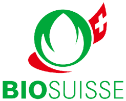
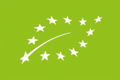
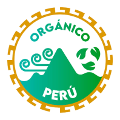
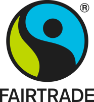
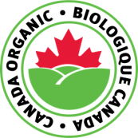
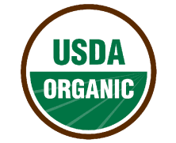

Calidad, Inocuidad y Comercio Justo
Nuestras certificaciones respaldan la producción de alimentos orgánicos de alta calidad, garantizando que nuestros productos cumplan con estándares y requisitos que aseguran procesos responsables y confiables. A su vez, reafirmamos nuestro compromiso con nuestros colaboradores a través de nuestras certificaciones sociales, lo cual genera el binomio perfecto entre la rentabilidad y el compromiso social.


Unión Europea (EU Organic)
Garantiza que nuestros alimentos son producidos de acuerdo a la estricta normativa ecológica de la UE, libre de transgénicos y pesticidas químicos.

Orgánico Perú
Sello oficial de la autoridad sanitaria y agraria nacional que certifica origen ecológico, trazabilidad y manejo ambientalmente responsable en campos peruanos.

Fairtrade (Comercio Justo)
Certificación internacional que garantiza pagos dignos a pequeños productores, desarrollo comunal, equidad laboral y prohibición de trabajo infantil.

USDA Organic (Estados Unidos)
Acredita el cumplimiento riguroso de las regulaciones orgánicas del Departamento de Agricultura de EE.UU. (National Organic Program - NOP).

Bio Suisse (Suiza)
El estándar suizo más exigente de agricultura ecológica integral, preservando la biodiversidad biológica de todo el ciclo de producción.

Inocuidad y Buenas Prácticas
Verificación técnica permanente de instalaciones, procesamiento térmico y empaque bajo los más altos estándares de higiene e inocuidad alimentaria.
El Binomio Perfecto: Rentabilidad y Compromiso Social
Nuestras certificaciones no son solo sellos en el empaque; son la evidencia tangible de un modelo que recompensa con justicia el trabajo del campo cajamarquino mientras brinda a los consumidores del mundo alimentos sanos, puros y transparentes.